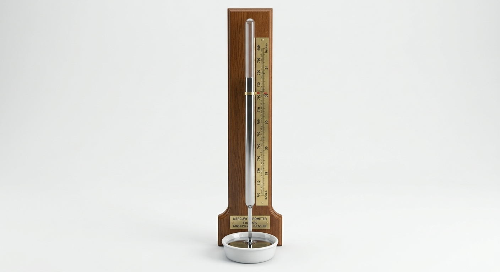

ความกดอากาศ หรือที่รู้จักกันในชื่อความดันบรรยากาศ คือแรงดันภายใต้ชั้นบรรยากาศของโลก ซึ่งเกิดจากน้ำหนักของมวลอากาศที่กดทับลงบนพื้นผิว ณ จุดนั้น ๆ โดยทั่วไปความกดอากาศจะลดลงอย่างรวดเร็วเมื่อระดับความสูงเพิ่มขึ้น สำหรับบรรยากาศมาตรฐาน (สัญลักษณ์: atm) คือหน่วยของแรงดันที่กำหนดไว้เท่ากับ 101,325 Pa (1,013.25 hPa หรือ 1,013.25 mbar) ซึ่งเทียบเท่ากับ 760 mmHg, 29.9212 นิ้วปรอท หรือ 14.696 psi ซึ่งค่า 1 atm นี้เทียบเท่ากับความดันบรรยากาศเฉลี่ยที่ระดับน้ำทะเลพอดี
องค์ประกอบสำคัญที่ทำให้ค่าความกดอากาศในแต่ละพื้นที่แตกต่างกัน
ยิ่งสูงขึ้นไป อนุภาคของอากาศจะยิ่งเบาบางลง ทำให้ความกดอากาศลดลงตามระดับความสูง
เมื่ออุณหภูมิสูงขึ้น อากาศจะขยายตัวและเบาลง ความกดอากาศจึงลดลง ในทางกลับกันอากาศเย็นจะมีความกดอากาศสูงกว่า
ไอน้ำในอากาศมีความหนาแน่นน้อยกว่าอากาศแห้ง อากาศที่มีความชื้นสูงจึงมีความกดอากาศต่ำกว่าอากาศแห้ง
ยิ่งระดับความสูงเพิ่มขึ้น อนุภาคของอากาศจะยิ่งเบาบางลง ส่งผลให้ความกดอากาศลดลงตามลำดับ
ความกดอากาศ: สูงที่สุด (~1,013.25 hPa ที่ระดับน้ำทะเล)
เป็นชั้นที่หนาแน่นที่สุด มีมวลอากาศถึง 80% ของบรรยากาศทั้งหมด และเป็นบริเวณที่เกิดสภาพอากาศ ไอน้ำ เมฆ และฝน
ความกดอากาศ: ลดลงเหลือเพียง 1% - 10%
บรรยากาศนิ่งและปราศจากพายุ มีชั้นโอโซนช่วยกรองรังสี UV จึงเป็นระดับความสูงที่เหมาะสมต่อการบินของเครื่องบินพาณิชย์
ความกดอากาศ: ต่ำมาก (ต่ำกว่า 0.1%)
แม้อากาศจะเบาบางมาก แต่ยังมีความหนาแน่นเพียงพอที่จะสร้างแรงเสียดทานช่วยเผาไหม้อุกกาบาต (ดาวตก) ไม่ให้ตกถึงพื้นโลก
ความกดอากาศ: เข้าใกล้สภาวะสูญญากาศ
มีอนุภาคประจุไฟฟ้าจำนวนมาก เป็นชั้นที่เกิดปรากฏการณ์ออโรรา (แสงเหนือ-แสงใต้) และเป็นตำแหน่งวงโคจรของดาวเทียม
ความกดอากาศ: ไม่มี (0 hPa)
เป็นชั้นนอกสุดที่ค่อยๆ กลืนหายไปกับอวกาศ โมเลกุลแก๊สเบาบางมากจนแรงดึงดูดของโลกไม่สามารถยึดไว้ได้
เกิดจากอากาศเย็นที่มีความหนาแน่นสูงจมตัวลง ท้องฟ้าจะโปร่ง อากาศแห้งและเย็น มักไม่มีเมฆและฝน
เกิดจากอากาศร้อนลอยตัวสูงขึ้น อากาศรอบข้างเข้าแทนที่ มักทำให้เกิดเมฆ ฝน หรือพายุหมุน
ลมเกิดจากการเคลื่อนที่ของอากาศจากบริเวณที่มีความกดอากาศสูงไปสู่บริเวณที่มีความกดอากาศต่ำ
นักอุตุนิยมวิทยาใช้เครื่องมือเฉพาะทางในการตรวจวัดค่าแรงดันอากาศเพื่อพยากรณ์อากาศ

อาศัยหลักการสมดุลของแรงดันบรรยากาศ โดยใช้หลอดแก้วยาวปิดปลายข้างหนึ่งที่มีปรอทอยู่เต็มคว่ำลงในอ่างปรอท เมื่อความกดอากาศเปลี่ยนแปลง แรงดันจะกดลงบนผิวปรอททำให้ระดับปรอทในหลอดขยับสูงขึ้นหรือลดลง
มีความแม่นยำและเสถียรภาพสูงที่สุด นิยมใช้เป็น "เครื่องมือมาตรฐานอ้างอิง" ในห้องปฏิบัติการและสถานีอุตุนิยมวิทยา
เป็นเครื่องมือวัดแบบไม่ใช้ของเหลว ทำงานโดยใช้ตลับโลหะบางสุญญากาศ (Aneroid Capsule) ที่ยืดหรือยุบตัวตามแรงดันอากาศ แล้วถ่ายทอดผ่านกลไกคันโยกและเฟืองไปหมุนเข็มชี้บนหน้าปัด
ขนาดเล็ก พกพาสะดวก ปลอดภัยไร้สารปรอท นิยมใช้บนเรือ เดินป่า และดัดแปลงเป็นแอลติมิเตอร์วัดความสูงบนเครื่องบิน
กรมอุตุนิยมวิทยา แหล่งข้อมูลความรู้เกี่ยวกับสภาพอากาศและบรรยากาศ